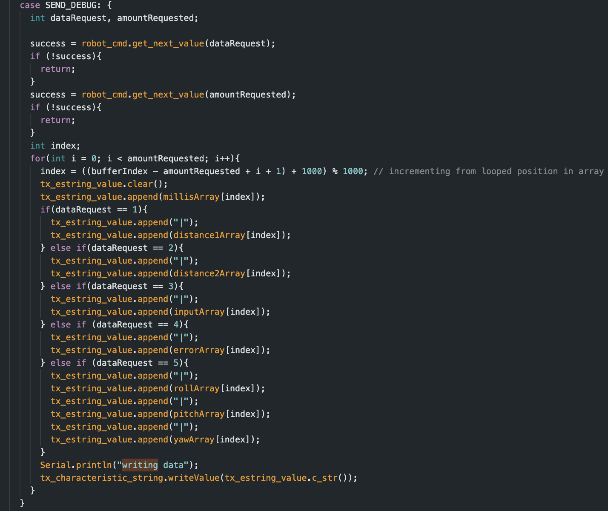
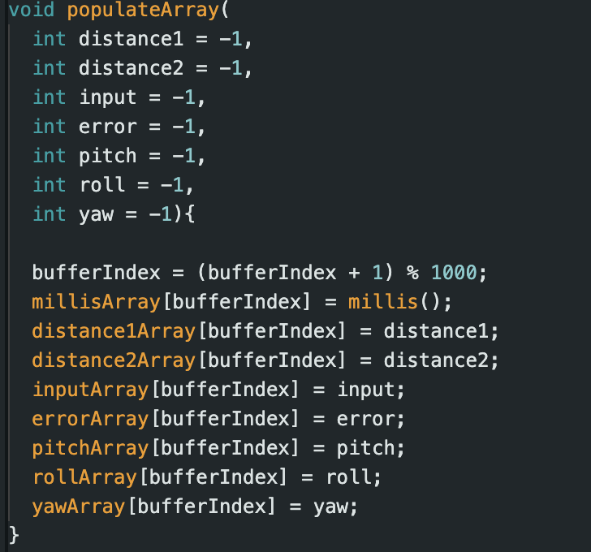

Overview of Lab 5
The goal of lab 5 was to design and implement a positional PID controller for the RC car. Using any combination of proportional, integral, and derivative control, the car should be able to go to any position 2-4 meters away from a wall. The car should also be able to achieve positional control on different surfaces without difficulty.
Prelab
Before starting the lab, the system for sending data over Bluetooth was established. The following commands were created to execute actions on the Artemis.
To analyze the performance or failure of the RC car, developing a debug command was particularly important. The debug command requests data from the Artemis to later be processed in Python. The command takes in a data type and quantity and returns the requested amount of time-stamped data. On the Artemis side, the data arrays are populated every time the PID controller runs. Once the data is in Python, it can be analyzed separately.


Section 1: Optimizing Sampling
To create a usable PID controller, it is necessary to optimize the sampling rate of the time of flight sensors and decouple the PID loop from the sensors. One possible solution to increasing the sampling rate of the ToF sensors is to lower their accuracy and remove any delays or print statements in the loop. However, even with optimization, the maximum refresh rate of the sensors is 50Hz. To increase the rate that the PID loop runs, the sensors and PID were decoupled from each other. Instead of waiting for the sensors to be ready before continuing to run PID, the PID was run every loop cycle and the sensors only returned data when they were ready. Using this method, the PID loop ran much faster than the ToF sensors gathered data, allowing for more processing. To provide accurate data to the PID loop, the distance from the wall was linearly extrapolated between sensor measurements.
With these optimizations, the PID loop ran roughly 12 times faster than the ToF sensors returned data.
Section 2: Designing PID
Once the framework for the PID controller was built, it was time to design the controller itself. The first step was calculating reasonable Kp values for proportional control. The motor runs on duty cycles between 0 and 255 and the distance from the ToF sensors is measured in mm. Since we don’t want to run the motors at full power for energy conservation and we don’t want the car to be in its deadband range, the useable PWM values were 40 to 180. While the maximum PWM signal is hard coded into the motor code, the minimum is added to the PID control signal, giving this equation: input = Kp * error + minInput. Assuming that the motor should not be at maximum speed within 1000mm of its target position, the maximum Kp value is (180 - 40)/1000 = 0.14. Meanwhile, assuming the motor should be moving at an arbitrary PWM of 41 within 100mm of the target position, the minimum Kp value is (41-40)/100 = 0.01. With reasonable values for Kp established, the Ziegler-Nichols method was used to calculate reasonable Kp, Ki, and Kd and then they were fine-tuned to final values of Kp = 0.03, Ki = 0.01, Kd = 1. Beyond designing a standard PID controller, a few extra “hacks” were implemented to improve performance. The most active one was using active breaking to stop that car whenever it was within 20mm of the target distance. This prevents oscillations around the goal and allows for fast settling time.
Section 3: Running PID
Finally, with all the values calculated, it was time to test the robustness of the PID controller. The goal was to have the car move on multiple surfaces and avoid crashing into walls. To analyze the performance of the PID controller, the maximum linear speed was calculated to be SPEED, and distance vs. time and input vs. error were plotted.